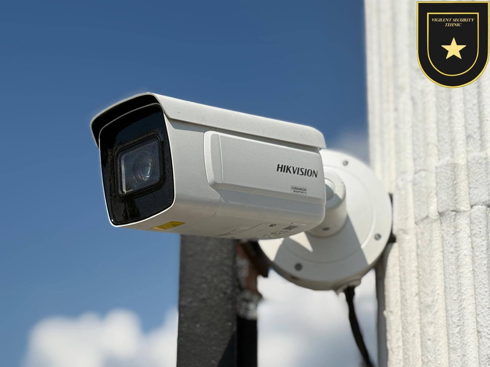

Transmiterea alarmelor
Comunicatoarele IP/GSM trimit către dispecerat semnalele centralei și informațiile despre zona configurată.
Dispecerat, video și reacție
Semnalele de alarmă sunt urmărite permanent, iar imaginile camerelor pot susține verificarea și reacția atunci când soluția contractată include monitorizare video.
Ce include serviciul
Monitorizarea conectează sistemele de alarmă, camerele video și, după caz, controlul accesului la dispecerat ori la personalul de securitate desemnat. În funcție de configurația convenită, operatorii sau agenții din obiectiv pot urmări imaginile live pentru evaluare în timp real, pot verifica video o alarmă și pot consulta ulterior înregistrările păstrate. Durata de stocare, drepturile de acces și pașii de escaladare se stabilesc pentru fiecare obiectiv.
Capabilități și integrare
Configurația se stabilește după evaluarea obiectivului. Funcțiile video, stocarea, monitorizarea de către operatori sau agenți și intervenția se includ numai atunci când sunt necesare și prevăzute contractual.
Comunicatoarele IP/GSM trimit către dispecerat semnalele centralei și informațiile despre zona configurată.
Alerta poate fi asociată camerei relevante, pentru ca operatorul să verifice vizual contextul, dacă sistemele sunt integrate.
Unde este inclusă, imaginile pot fi urmărite în timp real de operatorii dispeceratului sau de agenții de securitate desemnați.
Imaginile pot fi păstrate pentru analiza ulterioară, cu perioada de retenție și accesul stabilite pentru obiectiv.
O alertă manuală distinctă poate iniția procedura convenită pentru acel tip de eveniment.
Alarma, sistemul video, controlul accesului și comunicațiile pot fi corelate pentru o evaluare mai clară a evenimentului.
Galerie
Câteva imagini din activitatea echipelor Vigilent Security.
